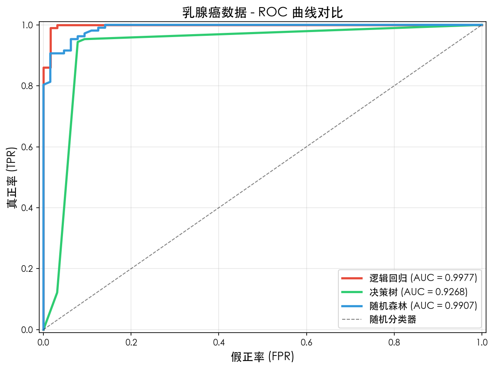
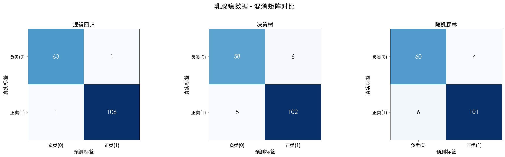
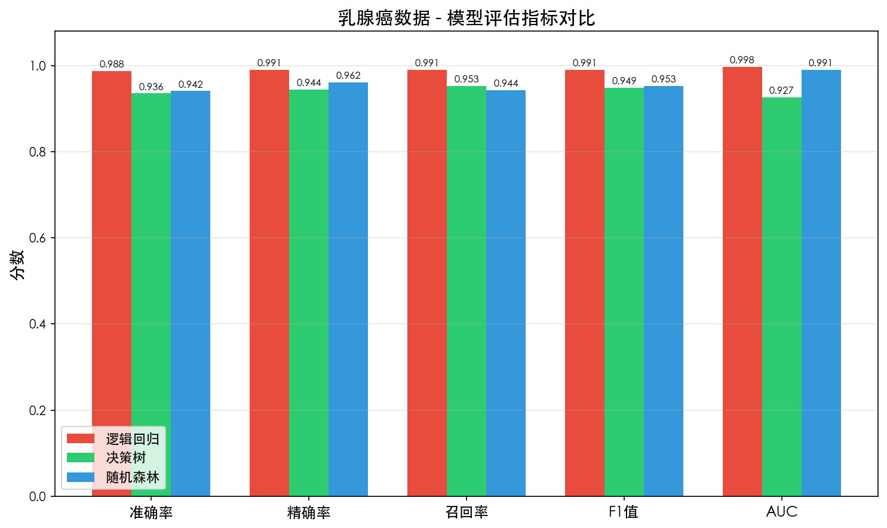
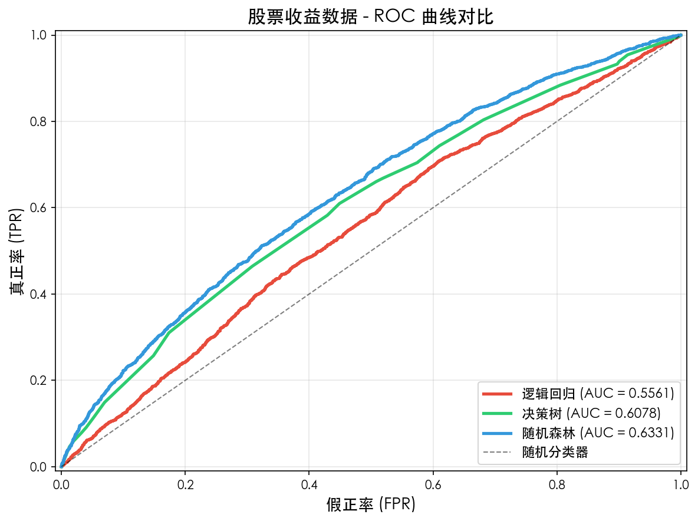
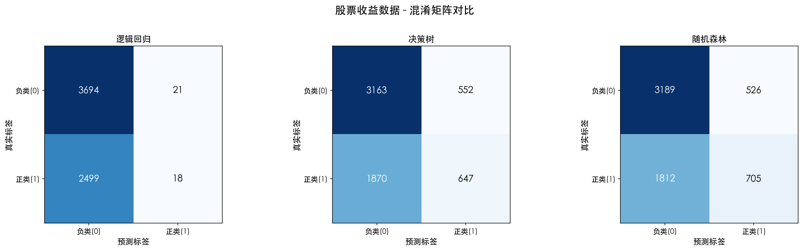
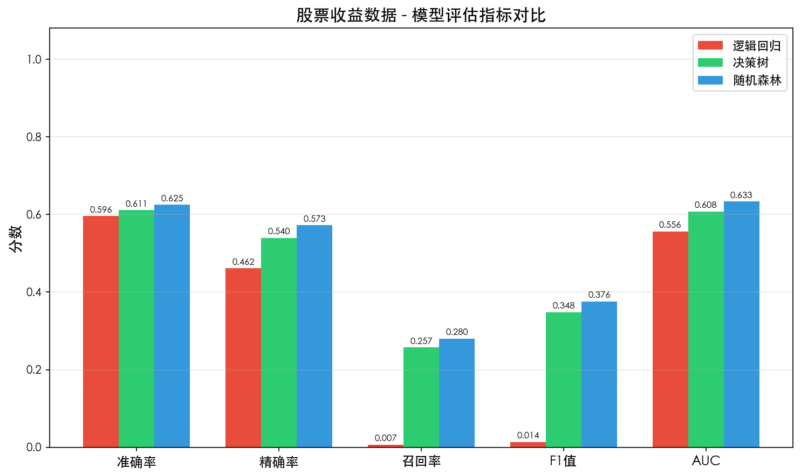

TASK5 · 逻辑回归 · 决策树 · 随机森林 · 混淆矩阵 · AUC · ROC曲线
分类（Classification）是监督学习的核心任务之一：给定带标签的训练数据，学习一个从特征 X 到离散标签 Y 的映射关系。常用的分类算法包括逻辑回归、决策树、随机森林等。
虽然名字里有"回归"，但逻辑回归是经典的分类算法，尤其适合二分类任务。
通过 Sigmoid 函数将线性回归的输出映射到 (0,1) 区间，表示样本属于正类的概率：
最终预测规则：若 P(Y=1|X) ≥ 0.5，则预测为正类（1），否则为负类（0）。
使用对数损失（交叉熵损失）：
决策树是一种树形结构的分类器，通过对特征空间进行递归划分来预测样本标签。
从根节点开始，选择信息增益最大或基尼系数最小的特征进行切分，递归构建子树，直到满足停止条件。
随机森林是集成学习（Ensemble Learning）的代表性算法，通过组合多棵决策树来提升整体性能。
采用自助采样（Bootstrap Sampling）从训练集中有放回地抽取多个子集，分别训练决策树，预测时采用多数投票（分类）或平均（回归）。
混淆矩阵是评估分类模型性能的基础工具，将预测结果按真实类别与预测类别的组合进行统计。
| 预测为负类(0) | 预测为正类(1) | |
|---|---|---|
| 真实负类(0) | TN（真负） | FP（假正） |
| 真实正类(1) | FN（假负） | TP（真正） |
ROC 曲线以假正率 FPR为横轴，真正率 TPR（召回率）为纵轴，展示了模型在不同分类阈值下的表现。
绘制方法：遍历所有可能的分类阈值，每个阈值对应一对 (FPR, TPR) 值，连成曲线。
AUC 即 ROC 曲线下方的面积，取值范围 [0, 1]。
| AUC 范围 | 模型能力 |
|---|---|
| 0.50 | 等同于随机猜测 |
| 0.50 ~ 0.70 | 效果较差 |
| 0.70 ~ 0.85 | 效果一般 |
| 0.85 ~ 0.95 | 效果很好 |
| 0.95 ~ 1.00 | 效果优秀 |
本案例同时使用两个数据集进行对比实验：
# -*- coding: utf-8 -*-
# 分类型机器学习模型实战
import numpy as np
import pandas as pd
import matplotlib.pyplot as plt
from sklearn.model_selection import train_test_split
from sklearn.preprocessing import StandardScaler
from sklearn.linear_model import LogisticRegression
from sklearn.tree import DecisionTreeClassifier
from sklearn.ensemble import RandomForestClassifier
from sklearn.metrics import (confusion_matrix, roc_curve,
roc_auc_score, accuracy_score)
# ========== 1. 加载数据 ==========
df = pd.read_csv('model_data_cancer.csv')
feature_cols = [c for c in df.columns if c != 'target']
X = df[feature_cols].values
y = df['target'].values
# ========== 2. 划分训练集/测试集 ==========
X_train, X_test, y_train, y_test = train_test_split(
X, y, test_size=0.3, random_state=42, stratify=y
)
# ========== 3. 特征标准化 ==========
scaler = StandardScaler()
X_train_s = scaler.fit_transform(X_train)
X_test_s = scaler.transform(X_test)
# ========== 4. 构建并训练模型 ==========
models = {
'逻辑回归': LogisticRegression(max_iter=1000),
'决策树': DecisionTreeClassifier(max_depth=5),
'随机森林': RandomForestClassifier(n_estimators=100, max_depth=8)
}
# ========== 5. 模型评估 + 6. 绘制ROC曲线 ==========
fig, ax = plt.subplots(figsize=(8, 6))
colors = ['#e74c3c', '#2ecc71', '#3498db']
for (name, model), color in zip(models.items(), colors):
# 训练
if name == '逻辑回归':
model.fit(X_train_s, y_train)
y_prob = model.predict_proba(X_test_s)[:, 1]
else:
model.fit(X_train, y_train)
y_prob = model.predict_proba(X_test)[:, 1]
# 计算AUC并绘图
auc = roc_auc_score(y_test, y_prob)
fpr, tpr, _ = roc_curve(y_test, y_prob)
ax.plot(fpr, tpr, color=color, linewidth=2.5,
label=f'{name} (AUC = {auc:.4f})')
ax.plot([0, 1], [0, 1], 'k--', label='随机分类器')
ax.set_xlabel('假正率 (FPR)')
ax.set_ylabel('真正率 (TPR)')
ax.set_title('ROC 曲线对比')
ax.legend(); ax.grid(True, alpha=0.3)
plt.tight_layout()
plt.savefig('roc_curve.png', dpi=150)
plt.show()
| 步骤 | 关键代码 | 作用 |
|---|---|---|
| ① 数据加载 | pd.read_csv() | 读取 CSV 数据为 DataFrame |
| ② 数据划分 | train_test_split(...stratify=y) | 按 7:3 划分训练/测试集， stratify 保证类别比例一致 |
| ③ 特征标准化 | StandardScaler() | 将特征缩放为均值0方差1， 对逻辑回归尤为重要 |
| ④ 模型训练 | model.fit(X_train, y_train) | 用训练集拟合模型参数 |
| ⑤ 预测概率 | predict_proba()[:,1] | 取正类预测概率用于绘制 ROC |
| ⑥ 计算 AUC | roc_auc_score(y_test, y_prob) | 计算 ROC 曲线下面积 |
| ⑦ 绘制 ROC | roc_curve(y_test, y_prob) | 计算 (FPR, TPR) 序列并绘制 |
569 个样本按 7:3 划分（训练 398，测试 171）。
| 模型 | 准确率 | 精确率 | 召回率 | F1 值 | AUC |
|---|---|---|---|---|---|
| 逻辑回归 | 0.9883 | 0.9907 | 0.9907 | 0.9907 | 0.9977 |
| 决策树 | 0.9357 | 0.9444 | 0.9533 | 0.9488 | 0.9268 |
| 随机森林 | 0.9415 | 0.9619 | 0.9439 | 0.9528 | 0.9907 |



20,772 个样本按 7:3 划分（训练 14,540，测试 6,232）。
| 模型 | 准确率 | 精确率 | 召回率 | F1 值 | AUC |
|---|---|---|---|---|---|
| 逻辑回归 | 0.5956 | 0.4615 | 0.0072 | 0.0141 | 0.5561 |
| 决策树 | 0.6114 | 0.5396 | 0.2571 | 0.3482 | 0.6078 |
| 随机森林 | 0.6248 | 0.5727 | 0.2801 | 0.3762 | 0.6331 |



| 维度 | 逻辑回归 | 决策树 | 随机森林 |
|---|---|---|---|
| 模型类型 | 线性分类器 | 非线性树模型 | 集成树模型 |
| 可解释性 | ⭐⭐⭐⭐⭐ | ⭐⭐⭐⭐ | ⭐⭐ |
| 训练速度 | ⭐⭐⭐⭐⭐ | ⭐⭐⭐⭐ | ⭐⭐⭐ |
| 抗过拟合 | ⭐⭐⭐⭐⭐ | ⭐⭐ | ⭐⭐⭐⭐ |
| 预测精度 | 中 | 中 | 高 |
| 特征要求 | 需标准化 | 无需标准化 | 无需标准化 |
| 适用场景 | 线性可分问题 | 需要解释的简单任务 | 追求精度的复杂任务 |
用 准确率 / AUC；
如本任务的乳腺癌数据
用 F1 / AUC-PR；
关注少数类
用 AUC / 对数损失；
可调整阈值